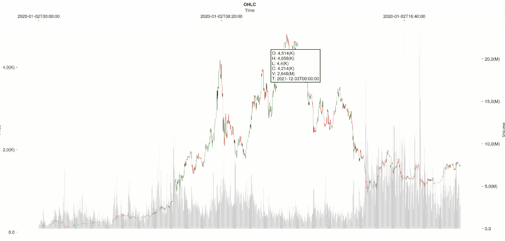

The Plotting module utilizes Makie for creating visualizations. It is important to note that graphical backends are not automatically included with the module and must be installed manually:
] add GLMakie
using GLMakie
# Alternatively:
] add WGLMakie
using WGLMakiePingPong enhances Makie with specialized plotting recipes for financial analysis:
- OHLCV (Open-High-Low-Close Volume) charts
- Detailed trade history visualization
- Summarized trade history with volume and balance insights.
Interactive backends, such as GLMakie and WGLMakie, allow for dynamic plots that can be clicked-and-dragged or zoomed. Additionally, interactive elements like tooltips are available on hover for candlesticks, trades, and balance charts.
OHLCV Charts
OHLCV data is represented using candlesticks to indicate price movement, with red signifying a price decrease and green an increase. Volume is depicted as bars in the background of the chart. Here's an example:
using Plotting
using Scrapers.BinanceData
df = binanceload("eth").data
figure = Plotting.ohlcv(df)
display(figure)
Trading History
The history of trades is illustrated using triangles, with upwards pointing triangles for buy transactions and downwards for sell transactions.
using Lang
using Strategies
using Engine.Executors.SimMode: SimMode as bt
strategy = st.strategy(:Example)
ai = strategy.universe[m"eth"].instance
bt.start!(strategy)
# Display the first 100 trades for an asset with the symbol "eth"
figure = Plotting.tradesticks(strategy, m"eth", to=100)
display(figure)
Aggregated Trade History for a Single Asset
The balloons function provides an aggregated view of trade density within a specified timeframe. Each circle's size correlates with the trade volume—larger circles denote higher volume. Positive volume timeframes are labeled as sells and negative ones as buys. Circle opacity reflects the number of trades within the timeframe. The accompanying balance chart indicates the quote currency held: the orange band represents actual cash (Strategy.cash), while the blue band represents the value of held assets in quote currency (AssetInstance.cash * price).
# Aggregate trades within a 1-day timeframe for the "eth" asset.
Plotting.balloons(strategy, m"eth", tf=tf"1d")
Aggregated Trade History for Multiple Assets
For a comprehensive analysis, aggregated trade history can plot multiple assets. Balloons are overlaid on the price line of each asset, with the same opacity and radius settings as single asset plots. To benchmark against a specific asset, pass a symbol or a dataframe using the benchmark keyword argument.
# Aggregate trades within a 1-week timeframe for all assets in the strategy universe
Plotting.balloons(strategy, tf=tf"1w")
Custom Indicators
Custom indicators enhance chart analysis and can be integrated into plots. For example, a moving average can be represented using the line_indicator function:
analyze!()
using Indicators
# Calculate 7-period and 14-period simple moving averages (SMA)
simple_moving_average_7 = Indicators.sma(df.close, n=7)
simple_moving_average_14 = Indicators.sma(df.close, n=14)
# Generate an OHLCV chart and overlay it with the SMA lines
figure = Plotting.ohlcv(df)
figure = line_indicator!(figure, simple_moving_average_7, simple_moving_average_14)
display(figure)
Channels or envelopes can be visualized using the channel_indicator function. This tool is useful for identifying trends and potential breakouts:
# Compute Bollinger Bands
bb = Indicators.bbands(df.close)
# Create a channel indicator plot with the Bollinger Bands data
Plotting.channel_indicator(df, eachcol(bb)...)